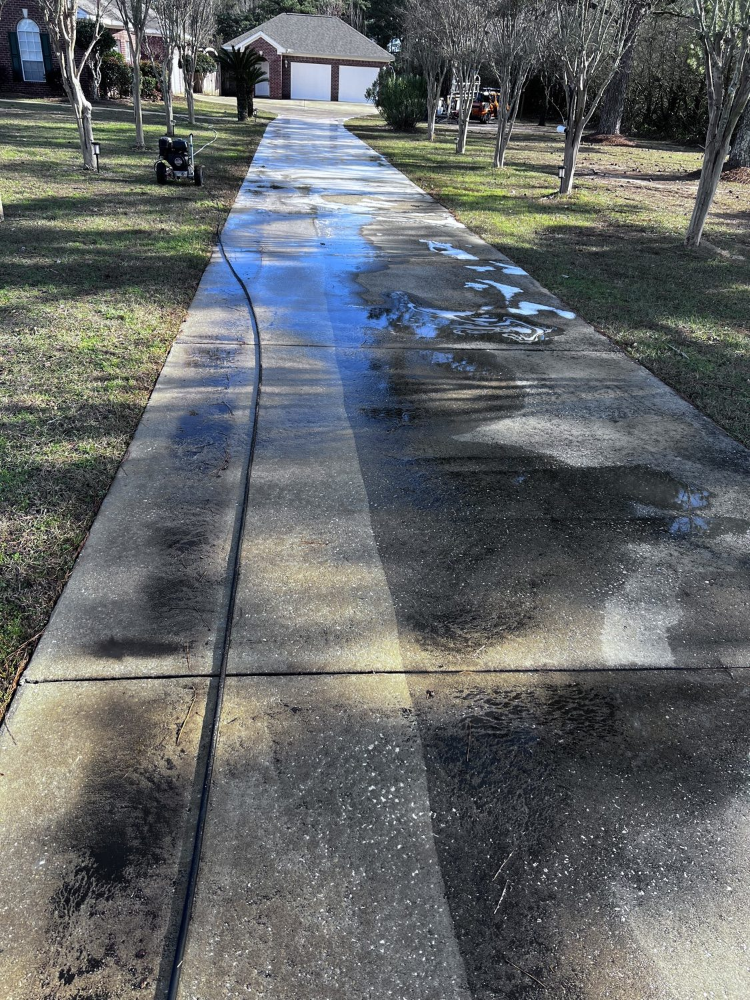

From the blog
How Often Should You Pressure Wash in Mobile, AL?
November 16, 2026

Mobile humidity is the short answer. Warm air, frequent rain, and shade from live oaks mean algae and mildew grow on almost every outdoor surface here, faster than they do farther inland. A surface that stays clean for two years in Birmingham can turn green in one year in Mobile. Here is a practical schedule for each surface around your home, plus what each job costs.
Driveway: once a year
Your driveway takes the most abuse. Cars track in dirt, tires leave marks, and the shaded edges grow algae that turns slick when wet. Most Mobile driveways need a wash once a year, and twice a year if the driveway sits under big trees. Short driveways start at $149, long driveways at $199, and extra long driveways at $279. If you see black tire marks that do not rinse off in the rain, or green patches near the edges, it is time.
House siding: once a year
Siding is the surface most homeowners forget until the green shows. Algae starts on the north side of the house, where the sun never quite dries the wall, then spreads. A house soft wash once a year keeps it off. Soft washing uses low pressure and a cleaning solution, so it removes the growth without damaging siding or paint. Prices run $349 for a 1,000 sq ft one story home up to $899 for a 4,000 sq ft home, and a two story home doubles the price.
Roof: every two to three years
Those dark streaks on a roof are usually algae, not age. A roof soft wash every two to three years removes them gently. Never pressure wash a roof. High pressure strips granules off shingles and shortens the life of the roof. A roof soft wash is $549.
Deck and patio: once a year
Wood decks and concrete patios both grow algae in Mobile, and a slick deck is a safety problem, not just an eyesore. Wash the deck and patio once a year, ideally in spring before outdoor season starts, or in fall before holiday guests arrive. Wood deck washing is $0.35 per sq ft plus $100 per deck. Patio washing is $0.25 per sq ft plus $100 per patio.
Walkways and sidewalks: once a year
Walkways catch the same grime as the driveway, plus leaf stains and mildew in the joints. A yearly wash keeps them bright and safe to walk on, and it makes the whole front of the house look better. Walkways can be added to a driveway wash for one visit, which saves a trip charge.
Signs it is time, whatever the calendar says
- Green or black growth on siding, concrete, or wood.
- A surface that feels slick underfoot when wet.
- Leaf stains that have sat through a few rains and will not fade.
- White or gray chalky film on siding, which is often oxidation mixed with grime.
- You are listing the home, hosting family, or a neighbor just had theirs done and yours suddenly looks tired.
Save with a bundle
Book three or more services together and you get 10% off the total. A driveway wash, a house soft wash, and a patio wash in one visit is the most common bundle we do, and it covers the surfaces guests see first. The discount applies the same way every time, so there is no need to wait for a sale.
Not sure what your home needs?
Kinney Cleaning Services washes driveways, siding, roofs, decks, and patios across Mobile County, from West Mobile to the Eastern Shore. Veteran owned and operated, backed by 5-Star Google Reviews.
Call (251) 767-0754 Get a Custom Quote